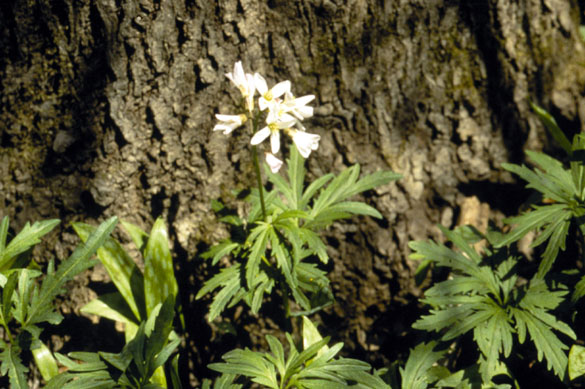
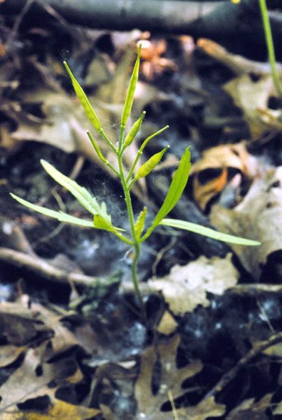
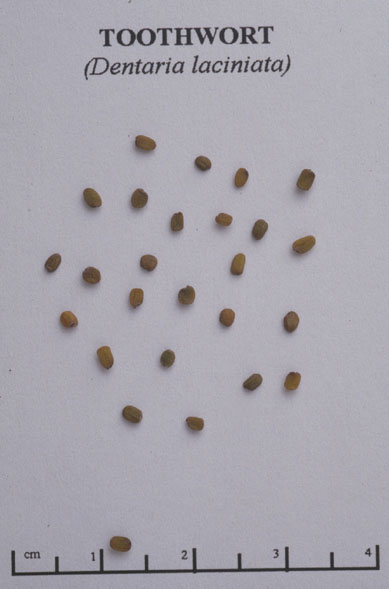

Dentaria laciniata
Family: Brassicaceae
Cut-Leaved Toothwort
Swink/Wilhelm #5


FLOWERING: End of March to May.
SEED TIMING: Early June.
HABITAT: Rich moist woods. Bottomlands.
DIAGNOSTIC FEATURES: 8 - 12 inches high. Usually 3 deeply cut leaves in a whorl midway up stem. 4 petaled white to pale lavender flowers. Grows in large colonies.
TO PICK: 3 to 4 weeks after flowering, typical mustard pods (siliques) begin to form. They grow to full length in 2 to 3 weeks and will begin to swell and look plump. Check to see if seeds inside are dark green and if some pods have already opened and lost their seed. Curl hand around spike and pinch stem with thumbnail. (Ripe pods will "explode" and shoot out their seeds when lightly touched). Allow siliques to dry and pop open in a closed paper bag.